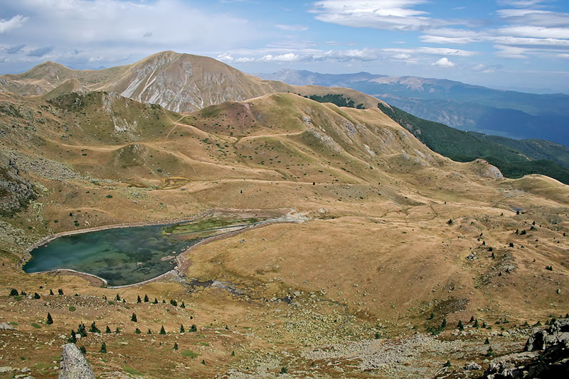

Village Podgorci – Podgorechko Lake – Crn Kamen Peak – “Vevchanska
Lokva” – Vevchani

The trail starts from the village of Podgorci. The trail goes on a
dirt road that leads through a beech forest and reaches to
Podgorecki Bacila. Moving along this path, on three occasions, a
broad grassy area or meadow is passed. Shortly after the sheep
farms, crossing the so-called “golinska skala” vast grasslands are
reached. From this point, moving along a better regulated mountain
path will lead to, initially, the small Lake Podgorecko and shortly
after the large Lake Podgorecko. Passing the lake, a detour on the
left is made on a steep trail to reach to the top of Crn Kamen. From
the top the trail descends to a rocky grass area to Vevchanska Lokva
where it continues through sheep farms in Vevcani. From the sheep
farms, on a dirt road through the beech forest, the trail goes along
the banks of the River Crven Kladenec and the dry area Esejnca,
where by descending, it ends at Vevcani Springs. The trail may be
continued towards the Albanian side through the green pass, which is
marked on the map. The instructions for passing the green areas are
given in the relevant chapter of this guidebook. The trail on the
Albanian side is explained as the following trail with the title BHA
A4.